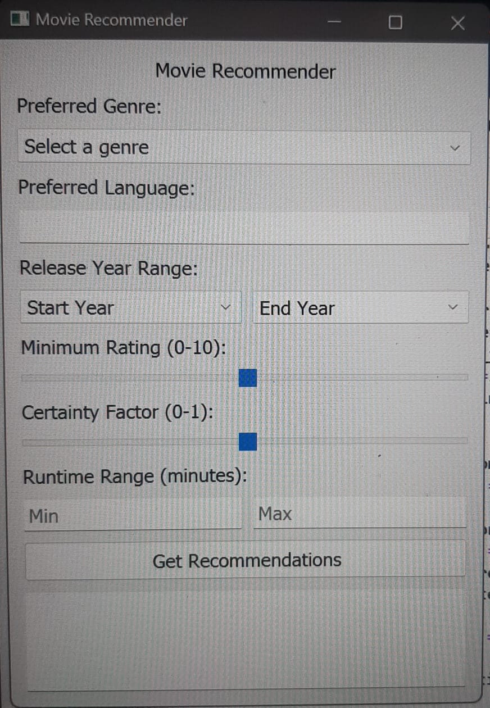
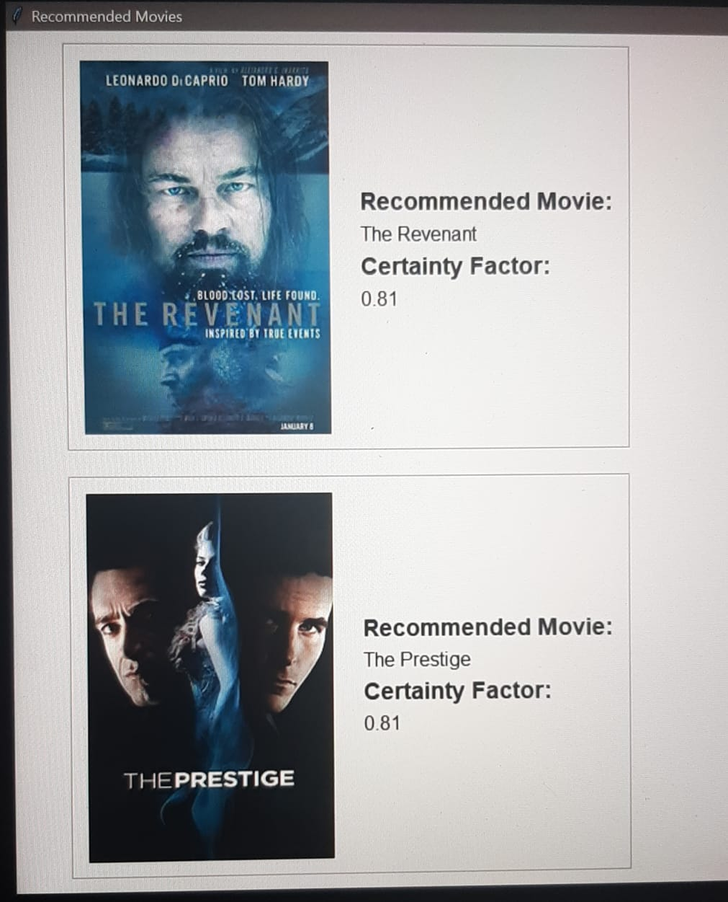

Filmatica
This application is a sophisticated knowledge-based system meticulously engineered to assist users in discovering tailored movie recommendations.
Through a series of thoughtfully curated questions posed to the user, the system employs intricate algorithms to discern preferences.
Subsequently, it provides a meticulously selected group of movies, individually ranked based on predictive modeling of the user's affinity.
Utilizing advanced calculations, the application accurately measures the user's preference for each movie, allowing for precise arrangement and presentation of the movie suggestions.
Languages used:
Python
Through a series of thoughtfully curated questions posed to the user, the system employs intricate algorithms to discern preferences.
Subsequently, it provides a meticulously selected group of movies, individually ranked based on predictive modeling of the user's affinity.
Utilizing advanced calculations, the application accurately measures the user's preference for each movie, allowing for precise arrangement and presentation of the movie suggestions.
Languages used:
Python

